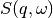
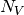

DirectILLReduction dialog.
Table of Contents
| Name | Direction | Type | Default | Description |
|---|---|---|---|---|
| InputWorkspace | Input | MatrixWorkspace | Mandatory | A workspace to reduce. |
| OutputWorkspace | Output | Workspace | Mandatory | The reduced S(Q, DeltaE) workspace. |
| Cleanup | Input | string | Cleanup ON | What to do with intermediate workspaces. Allowed values: [‘Cleanup ON’, ‘Cleanup OFF’] |
| SubalgorithmLogging | Input | string | Logging OFF | Enable or disable subalgorithms to print in the logs. Allowed values: [‘Logging OFF’, ‘Logging ON’] |
| IntegratedVanadiumWorkspace | Input | MatrixWorkspace | An integrated vanadium workspace. | |
| AbsoluteUnitsNormalisation | Input | string | Absolute Units OFF | Enable or disable normalisation to absolute units. Allowed values: [‘Absolute Units OFF’, ‘Absolute Units ON’] |
| DiagnosticsWorkspace | Input | MatrixWorkspace | Detector diagnostics workspace for masking. | |
| EnergyRebinningParams | Input | dbl list | Manual energy rebinning parameters. | |
| QBinningParams | Input | dbl list | Manual q rebinning parameters. | |
| Transposing | Input | string | Transposing ON | Enable or disable OutputWorkspace transposing. Allowed values: [‘Transposing ON’, ‘Transposing OFF’] |
| OutputSofThetaEnergyWorkspace | Output | Workspace | Output workspace for reduced S(theta, DeltaE). |
This is the main data reduction algorithm in ILL’s time-of-flight reduction suite. It performs the last steps of the reduction workflow, namely vanadium normalisation and transformation to  space (optionally  ). The algorithm’s workflow diagram is shown below:
). The algorithm’s workflow diagram is shown below:
InputWorkspace should contain data treated by DirectILLCollectData and, optionally, by DirectILLApplySelfShielding.
The mandatory IntegratedVanadiumWorkspace should have gone through DirectILLIntegrateVanadium. This workspace is used for the vanadium normalisation.
DiagnosticsWorkspace should be a product of DirectILLDiagnostics. It is used to mask the spectra of InputWorkspace.
The algorithm will transform the time-of-flight and spectrum numbers of InputWorkspace into at its output. For  to
to  transformation, SofQWNormalisedPolygon is used. By default, the output is transposed by Transpose. This behavior can be turned off by the Transpose property.
transformation, SofQWNormalisedPolygon is used. By default, the output is transposed by Transpose. This behavior can be turned off by the Transpose property.
The optional output can be enabled by the OutputSofThetaEnergyWorkspace.
Normalisation to absolute units can be enabled by setting AbsoluteUnitsNormalisation to 'Absolute Units ON'. In this case the data is multiplied by a factor
after normalisation to vanadium giving units of barn to the data. In the above,  stands for the vanadium number density,  for vanadium total scattering cross section and
for vanadium total scattering cross section and  sample number density.
sample number density.
The material properties should be set for InputWorkspace and IntegratedVanadiumWorkspace by SetSample before running this algorithm .
After conversion from time-of-flight to energy transfer, the binning may differ from spectrum to spectrum if the sample to detector distances are unequal. The SofQWNormalisedPolygon algorithm cannot work with such ragged workspaces and thus rebinning is necessary. The rebinning can be specified by the EnergyRebinningParams property. This is directly passed to Rebin as the Params property. If EnergyRebinningParams is not specified, an automatic rebinning scheme is used: - Find the spectrum with smallest bin border. Copy binning from this spectrum for negative energy transfers. - For positive energy transfers, use the median bin width at zero energy transfer.
QBinningParams are passed to SofQWNormalisedPolygon and have the same format as EnergyRebinningParamas. If the property is not specified, is binned to a value that depends on the separation of the detectors and the wavelength.
After conversion to momentum transfer, the vertical axis of the data is in units of momentum transfer while the horizontal axis is in energy transfer. By default, the data is transposed such that momentum transfer is on the horizontal axis and energy transfer in the vertical. This can be turned off by setting Transposing to 'Transposing OFF'.
Example - Fake IN4 workspace reduction
from mantid.kernel import DeltaEModeType, UnitConversion
import numpy
import scipy.stats
# Create a fake IN4 workspace.
# We need an instrument and a template first.
empty_IN4 = LoadEmptyInstrument(InstrumentName='IN4')
nHist = empty_IN4.getNumberHistograms()
# Make TOF bin edges.
xs = numpy.arange(530.0, 2420.0, 4.0)
# Make some Gaussian spectra.
ys = 1000.0 * scipy.stats.norm.pdf(xs[:-1], loc=970, scale=60)
# Repeat data for each histogram.
xs = numpy.tile(xs, nHist)
ys = numpy.tile(ys, nHist)
ws = CreateWorkspace(
DataX=xs,
DataY=ys,
NSpec=nHist,
UnitX='TOF',
ParentWorkspace=empty_IN4
)
# Set some histograms to zero for detector diagnostics.
ys = ws.dataY(13)
ys *= 0.0
ys = ws.dataY(101)
ys *= 0.0
# Manually correct monitor spectrum number as LoadEmptyInstrument does
# not know about such details.
SetInstrumentParameter(
Workspace=ws,
ParameterName='default-incident-monitor-spectrum',
ParameterType='Number',
Value=str(1)
)
# Add incident energy information to sample logs.
AddSampleLog(
Workspace=ws,
LogName='Ei',
LogText=str(57),
LogType='Number',
LogUnit='meV',
NumberType='Double'
)
# Add wavelength to sample logs
wl = UnitConversion.run('Energy', 'Wavelength', 57.0, 0.0, 0.0, 0.0, DeltaEModeType.Direct, 0.0)
AddSampleLog(
Workspace=ws,
LogName='wavelength',
LogText=str(wl),
LogType='Number',
LogUnit='Angstrom',
NumberType='Double'
)
# Elastic channel information is missing in the sample logs.
# It can be given as single valued workspace, as well.
elasticChannelWS = CreateSingleValuedWorkspace(107)
# Create a fake 'vanadium' reference workspace.
V_ws = Scale(
InputWorkspace=ws,
Factor=1.3
)
# Process vanadium.
DirectILLCollectData(
InputWorkspace=V_ws,
OutputWorkspace='vanadium',
ElasticChannelWorkspace=elasticChannelWS,
IncidentEnergyCalibration='Energy Calibration OFF', # Normally we would do this for IN4.
OutputEPPWorkspace='epps' # Needed for diagnostics and integration.
)
DirectILLDiagnostics(
InputWorkspace='vanadium',
OutputWorkspace='diagnostics_mask',
EPPWorkspace='epps',
MaskedComponents='rosace', #Exclude small-angle detectors.
)
DirectILLIntegrateVanadium(
InputWorkspace='vanadium',
OutputWorkspace='vanadium_factors',
SubalgorithmLogging='Logging ON',
EPPWorkspace='epps',
Temperature=273.0
)
# Process sample.
DirectILLCollectData(
InputWorkspace=ws,
OutputWorkspace='preprocessed',
ElasticChannelWorkspace=elasticChannelWS,
IncidentEnergyCalibration='Energy Calibration OFF'
)
# Absorption corrections and empty container subtractions could be added here.
DirectILLReduction(
InputWorkspace='preprocessed',
OutputWorkspace='SofQW',
IntegratedVanadiumWorkspace='vanadium_factors',
DiagnosticsWorkspace='diagnostics_mask'
)
sofqw = mtd['SofQW']
nHist = sofqw.getNumberHistograms()
nBin = sofqw.blocksize()
print('Size of the final S(q,w) workspace: {} histograms, {} bins'.format(nHist, nBin))
Output:
Size of the final S(q,w) workspace: 177 histograms, 260 bins
Categories: Algorithms | ILL\Direct | Inelastic\Reduction | Workflow\Inelastic
Python: DirectILLReduction.py (last modified: 2018-06-14)